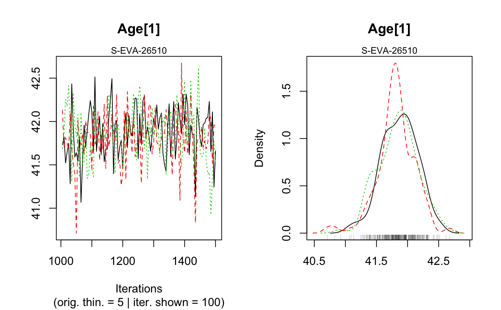
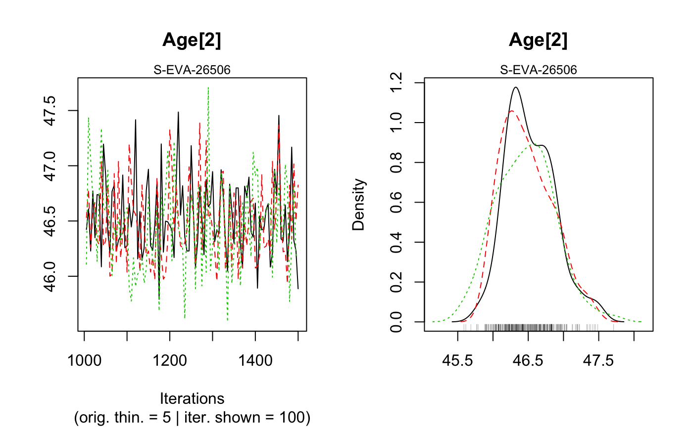
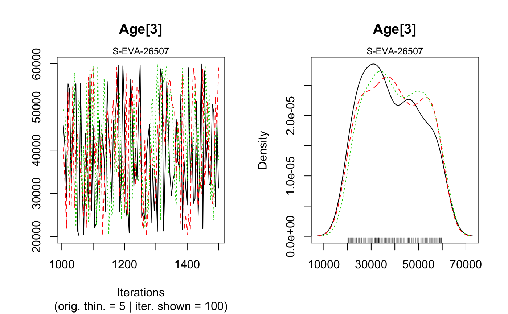
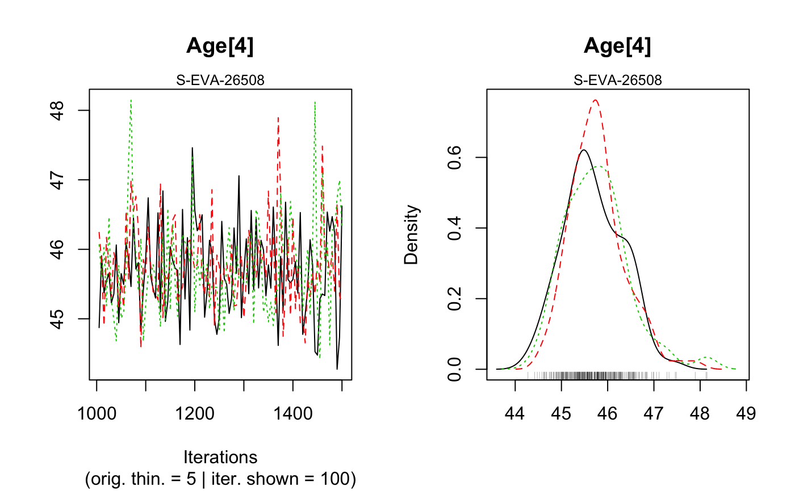
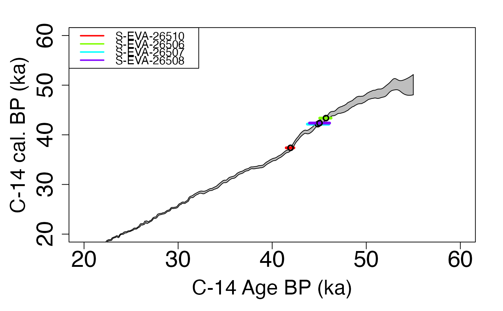
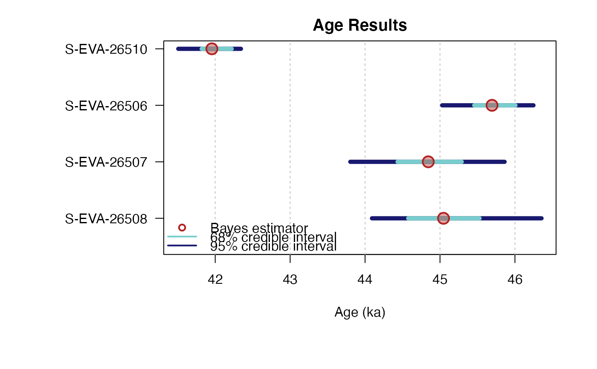

R/AgeC14_Computation.R
AgeC14_Computation.RdThis function calibrates the C-14 age of samples to get an age (in ka). The user can choose one of the following radiocarbon calibration curve: Northern or Sourthen Hemisphere or marine atmospheric. It must be the same curve for all samples.
AgeC14_Computation( Data_C14Cal, Data_SigmaC14Cal, SampleNames, Nb_sample, PriorAge = rep(c(10, 50), Nb_sample), SavePdf = FALSE, OutputFileName = c("MCMCplot", "HPD_CalC-14Curve", "summary"), OutputFilePath = c(""), SaveEstimates = FALSE, OutputTableName = c("DATA"), OutputTablePath = c(""), StratiConstraints = c(), sepSC = c(","), Model = c("full"), CalibrationCurve = c("AtmosphericNorth"), Iter = 50000, t = 5, n.chains = 3, quiet = FALSE )
| Data_C14Cal | numeric (required): corresponding to C-14 age estimate. |
|---|---|
| Data_SigmaC14Cal | numeric (required): correponding to the error of C-14 age estimates. |
| SampleNames | character (required): names of sample. The length of this vector is equal to |
| Nb_sample | integer: number of samples. |
| PriorAge | numeric (with default): lower and upper bounds for age parameter of each sample in years (not in ka).
Note that, |
| SavePdf | logical (with default): if TRUE save graphs in pdf file named |
| OutputFileName | character (with default): name of the pdf file that will be generated by the function if |
| OutputFilePath | character (with default): path to the pdf file that will be generated by the function if |
| SaveEstimates | logical (with default): if TRUE save Bayes estimates, credible interval at level 68% and 95% and
the result of the gelman en Rubin test of convergency, in a csv table named |
| OutputTableName | logical (with default): name of the table that will be generated by the function if |
| OutputTablePath | character (with default): path to the table that will be generated by the function if |
| StratiConstraints | numeric matrix or character(with default): input object for the statigraphic relation between samples.
If there is stratigraphic relation between samples see the details section for instructions regarding how to correctly fill |
| sepSC | character (with default): if |
| Model | character (with default): if "full", error on estimate calibration curve is taken account. If "naive" this error is not taken account in the age estimate. |
| CalibrationCurve | character (with default): calibration curve choosen. Allowed inputs are
|
| Iter | integer (with default): number of iterations for the MCMC computation (for more information see rjags::jags.model). |
| t | integer (with default): 1 every |
| n.chains | integer (with default): number of independent chains for the model (for more information see rjags::jags.model. |
| quiet | logical (with default): enables/disables rjags messages |
NUMERICAL OUTPUT
A list containing the following objects:
Sampling: that corresponds to a sample of the posterior distributions of the age parameters;
Outlier: stating the names of samples that are considered as outliers;
Model: stating which model was chosen ("full" or "naive");
CalibrationCurve: stating which radiocarbon calibration curve was chosen;
PriorAge: stating the priors used for the age parameter;
StratiConstraints: stating the stratigraphic relations between samples considered in the model.
The Gelman and Rubin test of convergency: print the result of the Gelman and Rubin test of convergency for the age estimate for each sample.
A result close to one is expected.
In addition, the user must visually assess the convergency of the trajectories by looking at the graph
generated by the function (see PLOT OUTPUT for more informations).
If both convergencies (Gelman and Rubin test and plot checking) are satisfactory,
the user can consider the estimates as valid.
Otherwise, the user may try increasing the number of MCMC interations (Iter)
or being more precise if it is possible on the PriorAge parameter to reach convergency.
Credible intervals and Bayes estimates: prints the Bayes estimates, the credible intervals at 95% and 68% for the age parameters for each sample.
PLOT OUTPUT
MCMC trajectories: A graph with the MCMC trajectories and posterior distributions of the age parameter is displayed.
On each line, the plot on the left represents the MCMC trajectories, and the one on the right the posterior distribution of the parameter.
Summary of sample age estimates: plot credible intervals and Bayes estimate of each sample age on one graph.
To give the results in a publication, we recommend to give the Bayes estimate of the parameters as well as the credible interval at 95% or 68%.
** How to fill StratiConstraints? **
If there is stratigraphic relations between samples, C-14 age in Data_C14Cal must be ordered by order of increasing ages.
The user can fill the StratiConstraints matrix as follow.
Size of the matrix: row number of StratiConstraints matrix is equal to Nb_sample+1,
and column number is equal to Nb_sample.
First line of the matrix:
for all i in {1,...,Nb_Sample}, StratiConstraints[1,i]=1 that means the lower bound
of the sample age (given in PriorAge[2i-1])
for the sample whose number ID is equal to i, is taken into account.
Sample relations: for all j in {2,...,Nb_Sample+1} and all i in {j,...,Nb_Sample},
StratiConstraints[j,i]=1 if sample age whose number ID is equal to j-1 is lower than
sample age whose number ID is equal to i. Otherwise, StratiConstraints[j,i]=0.
Note that StratiConstraints_{2:Nb_sample+1,1:Nb_sample} is a upper triangular matrix.
The user can also use SCMatrix or SC_Ordered (if all samples are ordered) functions
to construct the StratiConstraints matrix.
The user can also refer to a .csv file that containts the relation between samples as defined above.
The user must take care about the separator used in the csv file using the argument sepSC.
** More precision on Model **
We propose two models "full" or "naive". If Model = 'full' that means
measurement error and error on calibration curve are taken account in
the Bayesian model; if Model = "naive" that means only error on measurement
are taken account in the mode.
More precisely, the model considered here, as the one developped by Christen, JA (1994), assume multiplicative effect of errors to address the problem of outliers. In addition, to not penalyse variables that are not outliers and damage theirs estimation, we introduce a structure of mixture, that means only variable that are considered as outlier have in addition a multiplicative error.
Please note that the initial values for all MCMC are currently all the same for all chains since we rely on the automatic initial value generation of JAGS. This is not optimal and will be changed in future. However, it does not affect the quality of the age estimates if the chains have converged.
Christophe, C., Philippe, A., Kreutzer, S., 2020. AgeC14_Computation(): Bayesian analysis for C-14 age estimations of various samples. In: Christophe, C., Philippe, A., Kreutzer, S., Guerin, G., 2020. BayLum: Chronological Bayesian Models Integrating Optically Stimulated. R package version 0.2.0. https://CRAN.r-project.org/package=BayLum
Christen, JA (1994). Summarizing a set of radiocarbon determinations: a robust approach. Applied Statistics, 489-503.
Reimer PJ, Bard E, Bayliss A, Beck JW, Blackwell PC, Bronl Ramsey C, Buck CE, Cheng H, Edwards RL, Friedrich M, Grootes PM, Guilderson TP, Haflidason H, Hajdas I, Hatte C, Heaton TJ, Hoffmann DL, Hogg AG, Hughen KA, Kaiser KF, Kromer B, Manning SW, Niu M, Reimer RW, Richards DA, Scott EM, Southon JR, Staff RA, Turney CSM, van der Plicht J. 2013. IntCal13 ans Marine13 radiocarbon age calibration curves 0-50000 years cal BP. Radiocarbon 55(4)=1869-1887.
Hogg AG, Hua Q, Blackwell PG, Niu M, Buck CE, Guilderson TP, Heaton TJ, Palmer JG, Reimer PJ, Reimer RW, Turney CSM, Zimmerman SRH. 2013. SHCal13 Southern Hemisphere calibration, 0-50000 years cal BP. Radiocarbon 55(4):1889-1903
Claire Christophe, Anne Philippe, Guillaume Guérin, Sebastian Kreutzer
## Load data data(DATA_C14,envir = environment()) C14Cal <- DATA_C14$C14[,1] SigmaC14Cal <- DATA_C14$C14[,2] Names <- DATA_C14$Names nb_sample <- length(Names) ## Age computation of samples without stratigraphic relations Age <- AgeC14_Computation( Data_C14Cal = C14Cal, Data_SigmaC14Cal = SigmaC14Cal, SampleNames = Names, Nb_sample = nb_sample, PriorAge = rep(c(20,60),nb_sample), Iter = 500, quiet = TRUE)#> Warning: [plot_MCMC()] 'n.iter' out of range, reset to number of observations#> #> #> >> MCMC Convergence of Age parameters << #> ---------------------------------------------- #> Sample name Bayes estimate Uppers credible interval #> A_S-EVA-26510 1 1.02 #> A_S-EVA-26506 1 1.01 #> A_S-EVA-26507 1.01 1.06 #> A_S-EVA-26508 1.07 1.09 #> #> #> --------------------------------------------------------------------------------------------------- #> *** WARNING: The following information are only valid if the MCMC chains have converged *** #> --------------------------------------------------------------------------------------------------- #> #> #> #> >> Bayes estimates of Age for each sample and credible interval << #> ------------------------------------------------------ #> Sample name Bayes estimate Credible interval: #> A_S-EVA-26510 42 #> lower bound upper bound #> at level 95% 41 42 #> at level 68% 42 42 #> ------------------------------------------------------ #> Sample name Bayes estimate Credible interval: #> A_S-EVA-26506 47 #> lower bound upper bound #> at level 95% 46 47 #> at level 68% 46 47 #> ------------------------------------------------------ #> Sample name Bayes estimate Credible interval: #> A_S-EVA-26507 45 #> lower bound upper bound #> at level 95% 45 47 #> at level 68% 45 46 #> ------------------------------------------------------ #> Sample name Bayes estimate Credible interval: #> A_S-EVA-26508 46 #> lower bound upper bound #> at level 95% 44 47 #> at level 68% 45 46 #> #> ------------------------------------------------------